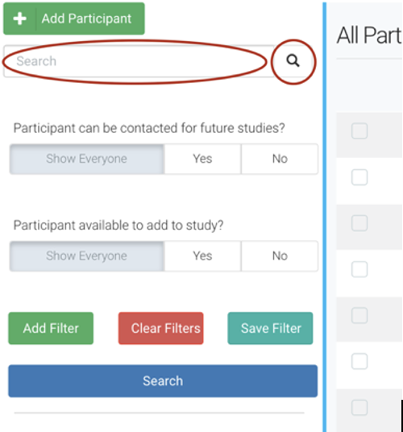

4 Ripple SOP
4.1 Ripple General SOP
- Ripple Science
- Ripple Science is a web-based software for CROs, Principal Investigators, and Project Coordinators that aids in participant recruitment and management.
- Ripple Science may be accessed by navigating to https://mesulamcenter.ripplescience.com. For access to Ripple, contact the data manager or the project manager.
- When logging into ripple, you see a navigation menu running across the top.
4.1.1 Registry

- The registry contains all participants that have ever expressed interest in the Mesulam Center, both participants enrolled in research, caregivers enrolled in support groups, potential participants that were screened and ineligible, etc.
- The registry is sorted by last name. The name of the participant/potential participant is in the first column, the list of studies that they have been added to is in the second, followed by sex and age and if they have ever been contact/when was the last time they were contacted.

- Search for a participant:
- To search for a specific participant, search either the last name, first name or global ID, the 15-17 alphanumeric unique ripple identifier for each person in the Ripple database.

b. To search for a group of potential participants that all meet the same criteria, you can filter the registry.
i. The below example search is for the number of people that were added to the Ripple registry after 1/1/23 until the date the report was filtered (1/25/23) and are above 80 years old and have not already been added to the superaging study. This resulted in 14 participants. For these participants, you can see if they have been contacted, what age they are, and what other studies they came in from.
ii. For more information click the arrow in blue to the right of each participant, to go to their contact card with all of the information about studies they have been added to, how much they have been contact, contact information, and screening information needed to determine eligibility. See more about the participant contact card below.
iii. If the person has been added to the global intake study, they were recruited from our online survey, if they are added to the URG Outreach study, they were recruited at a community event, and if they are not added to either, they were manually entered into the database.
 c. Adding participants to a study:
i. To add a participant to a study, click the check box next to their name, then a dropdown will appear at the top. Select the study and click apply. Multiple participants can be added to a study at one by clicking the check box next to each participant.
c. Adding participants to a study:
i. To add a participant to a study, click the check box next to their name, then a dropdown will appear at the top. Select the study and click apply. Multiple participants can be added to a study at one by clicking the check box next to each participant.